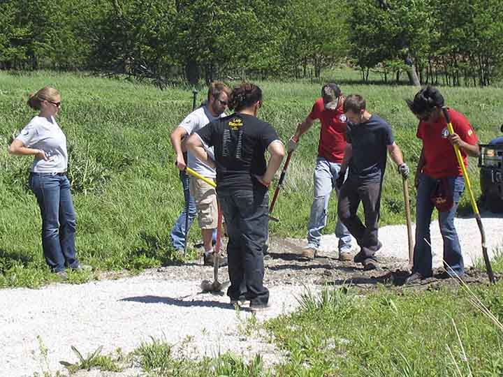

Get Involved!

| You can help us make a difference.
|
For many of the projects available, volunteers may come and work anytime during daylight hours, and for as many or as few days/hours as they have available. We also encourage groups (scouts, churches, service groups, clubs, schools and universities, etc.) to volunteer together for many of our projects.
Some of the most common volunteer projects include:
-
PROPERTY ASSISTANCE
-Land Steward Program
-Maintenance Mowing
-Prescribed Fire Burns
-Soft Trail Construction
-Brush Management
-Landscaping
-Gardening
-Fencing
-Building Maintenance and Repairs
HELP AT EVENTS
-Lead informational tours such as: nature hikes, plant identification, tree ID, outdoor photography, etc.
-Registration table and greeter
-Set up and/or tear down tables and chairs, signage, etc.
-Photography services
OFFICE ASSISTANCE
-Fold pages and stuff envelopes
-Distribute flyers in area towns and other locations
If you have an idea for how you can use your special skills to help Whiterock Conservancy please contact Chris Troendle by phone at (712) 684-2697 ext. 114 or email Chris and we can talk about it. We create new volunteer positions each year, and always have space for something special.
1390 Highway 141, Coon Rapids, IA 50058 | 712-684-2697
Whiterock Conservancy, a private, 501(c)(3) land trust, providing sustainable agriculture,
conservation, outdoor activities and recreation and environmental education.